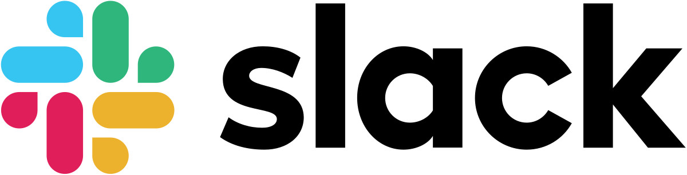

| Evaluation | Lists and Rankings | Classes | Online Judges | Study Material | Other Similar Courses |
 Slack (registo) Esclarecimento de duvidas em formato "instant messaging"
Evaluation
- Evaluation Formula
- Weekly Problems
- #00 - Introduction to the course and the online judges (not counting to grade)
- #01 - Sublinear complexity data structures (map, set, priority_queue) (until 18/10)
- #02 - Sorting, binary search, ternary search, bisection (until 25/10)
- #03 - Sqrt decomposition, segment trees and variants (until 01/11)
- #04 - Cumulative sums and fenwick trees (BITs) (until 08/11)
- #05 - Dynamic Programming I (classic) (until 15/11)
- #06 - Dynamic Programming II (partitions, games, dags, counting, search) (until 29/11)
- #07 - Strings (KMP, Aho-Corasick, tries, suffix trees, suffix arrays) (until 06/12)
- #08 - Graphs I (DFS, BFS, topological sorting, articulation points, bridges, euler paths, ssc) (until 20/12)
- #09 - Graphs II (distances: dijkstra, bellman-ford, floyd; MST: prim+kruskall; max flow) (until 10/01)
- #10 - Computational Geometry (points, lines, polygons, intersections, areas, inclusion, convex hull) (until 17/01)
- Competitive Events
- 1st Contest: 4th November, during class, 2h30m (problems similar to Div.3 CodeForces Round)
- 2nd Contest: 16th December, during class, 2h30m (partial points per problem)
- 3rd Contest: January/February (format to be announced)
Lists and Rankings
Classes
- [23/09] #00 - Introduction to the course and the online judge
- [30/09] #01 - Sublinear complexity data structures (map, set, priority_queue)
- [07/10] #02 - Sorting, binary search, ternary Search, bisection
- [11/10] #03 - Sqrt decomposition, segment trees and variants [includes 12086.cpp as a functional example of segment trees]
- [21/10] #04 - Cumulative sums and fenwick trees (BITs)
- [28/10] #05 - Dynamic Programming I (classic)
- [11/11] #06 - Dynamic Programming II (partitions, games, dags, counting, search)
- [18/11] #07 - Strings (KMP, Aho-Corasick, tries, suffix trees, suffix arrays)
- [25/11] #08 - Graphs I (DFS, BFS, topological sorting, articulation points, bridges, euler paths, ssc)
- [02/12] #09 - Graphs II (distances: dijkstra, bellman-ford, floyd; MST: prim+kruskall; max flow)
- [09/12] #10 - Computational Geometry (points, lines, polygons, intersections, areas, inclusion, convex hull)
Online Judges
Study Material
- Awesome Competitive Programming [recomendado]
(A curated list of awesome Competitive Programming, Algorithm and Data Structure resources)
- Main recommended books (available for free):
- Other books:
- Algorithmic Tutorials:
- Implementations/Notebooks (you strongly advised to implement by yourselves before seeing how others did
Other Similar Courses
Pedro Ribeiro - DCC/FCUP |
Last update: